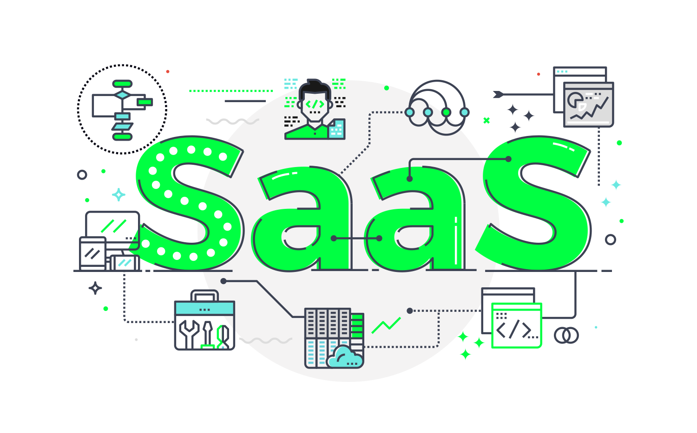

Tipos de Servicios Cloud

Infraestructura como Servicio (IaaS)
Accede a recursos computacionales virtualizados como servidores, almacenamiento y redes.
Plataforma como Servicio (PaaS)
Proporciona una plataforma para el desarrollo de aplicaciones sin gestionar la infraestructura subyacente.

Software como Servicio (SaaS)
Accede a aplicaciones alojadas en la nube, como suites de productividad, directamente desde tu navegador.